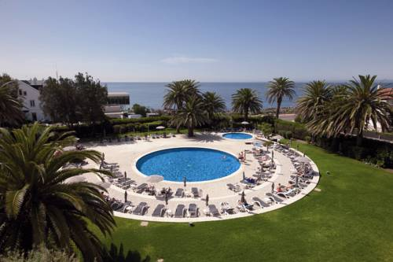

Este alojamento fica a 1 minuto a pé da praia. Com vista para o mar, este hotel está apenas a poucos metros da famosa Marina de Cascais e proporciona uma boa relação qualidade/preço.
Apenas a 5 minutos do centro da cidade, o Vila Galé Cascais é a escolha perfeita para as suas férias familiares ou eventos empresariais. Relaxe no conforto de um dos 233 quartos espaçosos ou aproveite a oportunidade para visitar o maior casino da Europa - o Casino Estoril.
Com a praia da Baía de Cascais apenas a uma curta distância a pé, os hóspedes podem optar por nadar no mar ou numa das piscinas do hotel. As crianças também têm a oportunidade de brincar no moderno e seguro parque infantil.
Não deixe de experimentar o Restaurante Versátil, onde pode encontrar o melhor da cozinha portuguesa, combinada com sabores do mar.
O Vila Galé Cascais pode ser o ponto de partida para os entusiastas do golfe desfrutarem de um dos 5 campos existentes num raio de 10 km.
Esta é a parte de Cascais que os hóspedes preferem, de acordo com comentários independentes.